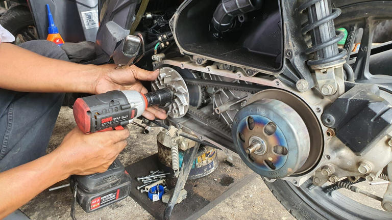
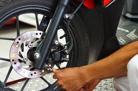

🧰 Paket Service Unggulan

Service CVT
Perawatan sistem CVT agar performa motor tetap optimal.

Throttle Body
Pembersihan & kalibrasi throttle body agar tarikan gas responsif.

Pengiriman Motor
Layanan antar-jemput motor langsung ke rumah Anda.

Service Rutin
Perawatan lengkap: oli, rem, CVT, dan kelistrikan.